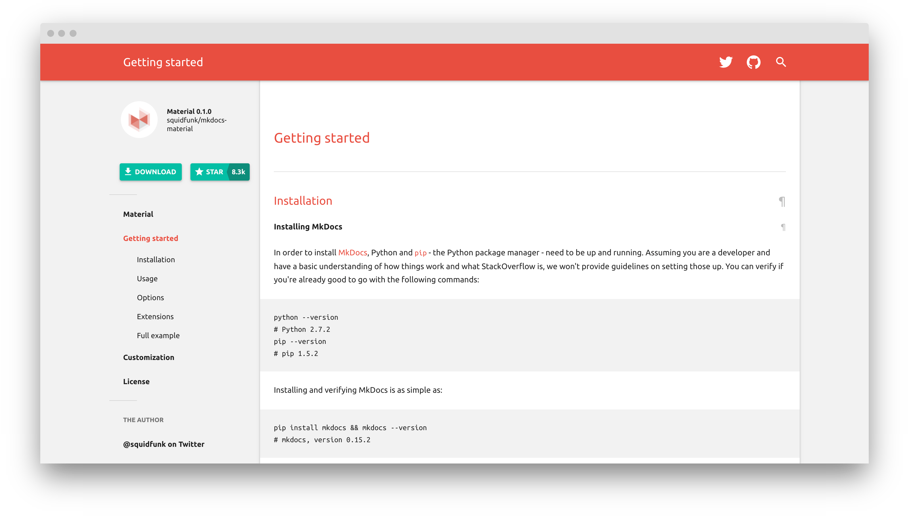

The past, present and future¶
2021 was a fantastic year for this project as we shipped many new awesome features, saw significant user growth and leveraged GitHub Sponsors to make the project sustainable.
Today, together, MkDocs and Material for MkDocs are among the most popular options when it comes to choosing a static site generator and theme for your technical documentation project. Material for MkDocs ensures that your content is always perfectly presented to your audience, regardless of screen resolution or device capabilities. It has evolved to a framework for technical writing, offering many features, some of which are yet to be found in other static site generators. However, we're far from the end, as 2022 is going to bring some interesting new capabilities.
This article showcases all features that were added in 2021 and gives an outlook on what's going to drop in 2022. Additionally, it provides some context on the history of the project.
A little history¶
In 2015, albeit 10 years in the industry, I was still quite new in Open Source. I wanted to release my latest Open Source project protobluff, a zero-copy Protocol Buffers implementation for C, which I've created as part of my former startup. As the project has a significant degree of complexity, I quickly realized that I was in need of good user documentation.
After evaluating static site generators in general and Hugo, Sphinx and MkDocs in particular, I quickly decided that MkDocs seemed a good choice, as it was specifically aimed at technical project documentation and easy to use. Unfortunately, all of the available themes looked dated and given that I'm a very visual person, I just couldn't convince myself to call it a day.
I had to build a theme.
Months later, in February 2016, I released the first version of Material for MkDocs (and with it, protobluff, the project I wanted to release in the first place), and it looked like this:

It was already fully responsive and overall, well, quite okayish, but barely customizable, as only the logo could be changed. Beyond that, it had no options: No color or navigation options, no instant loading, etc. The search was very rudimentary and only supported section titles:

It's important to know that at this point in time I've built Material for MkDocs for protobluff, the project I was really caring about. Almost 6 years later, nobody knows protobluff, but this little side project has taken off. If back in those days, you would've told me big organizations like AWS, Microsoft and CERN, as well as extremely popular Open Source projects like FastAPI and Kubernetes will be using this project in the future – I would've declared you insane.
I still find the success of this project quite surprising, as I thought that themes exist in abundance and are very much a solved problem. There's no glory in themes, no stars to earn (remember that I was new in Open Source, so this was the metric I was optimizing for), as there are thousands and thousands of options. However, as the years progressed, I learned that execution matters: although Material for MkDocs solves a problem for which thousands of solutions exist, it excels in a specific niche, and that niche is to be known as technical project documentation.
Today, this project is not only popular but funded by almost 300 individuals and organizations, resulting in a yearly budget of more than $50,000. This allows me to set aside enough time for the development of new features, bug fixing, stability improvement, issue triage and general support and still feels like a dream to me, as there are many failed stories of Open Source funding and people telling you: don't do Open Source, you'll be working for free.
Making Open Source sustainable is, after all, possible in 2021.
2021 in numbers¶
2021 was an exciting year, as the project has seen significant growth.
166k people visited the official documentation in 2021, totalling in 1,6m page views which is an increase of 83% when compared to 2020. The average visitor spends 1,5min on the site. While mobile phones make up 12% of visits, tablets only account for 0.6%. Visitors come from as many as 213 countries, which covers almost the whole world.
Features¶
It's absolutely mind-blowing that 38 new features were added to Material for MkDocs throughout 2021 – that's a new feature every 9,6 days – which was only possible because of the constantly improving funding situation. Following is a list of all features shipped in alphabetical order, some of which are still exclusively available to sponsors as part of Insiders:
- Admonition inline blocks
- Advanced search highlighting
- Anchor tracking
- Back-to-top button
- Boosting pages in search
- Brand new search plugin
- Code annotations
- Code annotations: anchor links
- Code annotations: strip comments
- Code block titles
- Code block line anchors
- Color palette toggle
- Content tabs: improved support
- Content tabs: auto-linking
- Content tabs: animated indicator
- Cookie consent
- Custom admonition icons
- Dark mode support for images
- Dismissable announcement bar
- Excluding content from search
- Latest release tag
- Mermaid.js integration
- Navigation icons
- Remove generator notice
- Rich search previews
- Stay on page when switching versions
- Search highlighting
- Search sharing
- Search suggestions
- Section index pages
- Site language selection
- Social cards
- Sticky navigation tabs
- Tags with search integration
- Tokenizer with lookahead
- Versioning
- Version warning
- Was this page helpful?
Additionally, a lot of bugs were fixed in the 1,000 commits that were pushed
to the repository this year. The changelog includes a list of all fixes.
Furthermore, a large amount of time was invested into refactoring the code base
to keep it in good shape. While the mkdocs-material package was released
55 times, mkdocs-material-insiders was shipped 72 times.
Funding¶
In 2021, monthly funding increased from $1,050 in the beginning of January to more than $4,300 (Dec 27, 2021), totaling in a yearly budget of more than $50,000. Compared to last year, revenue from funding has increased by 617% – which is absolutely unbelievable:

I'm solely providing these numbers to fulfill the transparency pledge I'm giving to my awesome sponsors, and to show that it's possible to make existing Open Source projects sustainable by following a well-designed release strategy.
You can learn about the strategy in the Insiders guide.
2022¶
Standing at the verge of the next year, it's safe to say that the project will continue to prosper and evolve, yielding many awesome features that will make technical writing more comfortable and flexible. Here's an excerpt of the features that will see the light of day in 2022:
-
Instant previews: instant previews will render a specific page section inside a tooltip when hovering an internal link, which will allow to implement things like glossaries. Further support for improving glossary functionality will also be investigated.
-
Text annotations: as a logical progression of code annotations which were added in 2021, authors will be able to add annotations to plain text, yielding excellent opportunities for side content. Of course, text annotations will be as easy to use as code annotations.
-
Navigation pruning: to optimize large documentation projects, Material for MkDocs will introduce a new feature flag called
navigation.prunethat will lead to significantly smaller HTML files for documentation projects with huge navigation hierarchies. -
Navigation status badge: as an addition to the recently added navigation icon support, a status will be attributable to each page, allowing to mark a page in the navigation tree with an icon as new or deprecated. Custom status types will also be supported.
-
Card grids: as a further component in the toolkit of technical writing, card grids will allow arranging content in grids, which is especially useful for overview pages. They will allow to arrange arbitrary content, including code blocks, admonitions, etc.
-
Blog support: blogging support is still under investigation and expected to be one of the major additions in 2022. Blogging will perfectly integrate with writing documentation, allowing to use all components available in Material for MkDocs.
This list is incomplete. Additionally, many new smaller features will be added next year, just as in 2021. You can follow @squidfunk on Twitter to stay updated.
Happy new year!